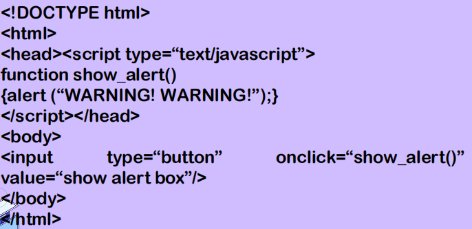
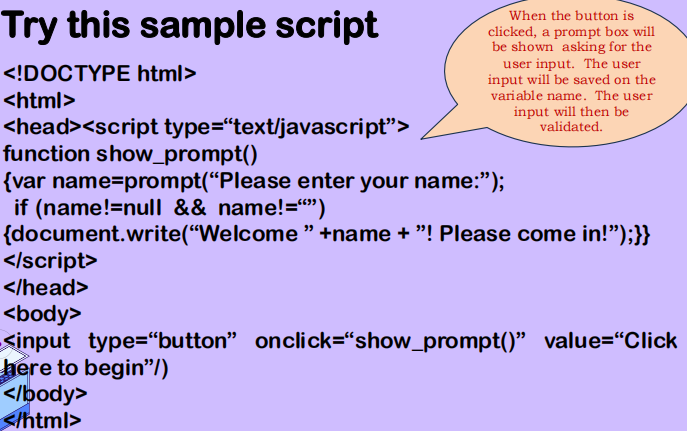
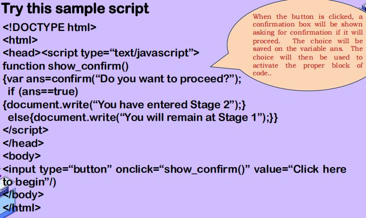
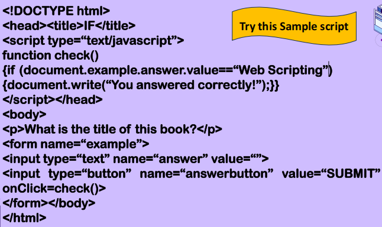
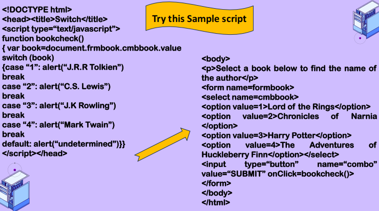
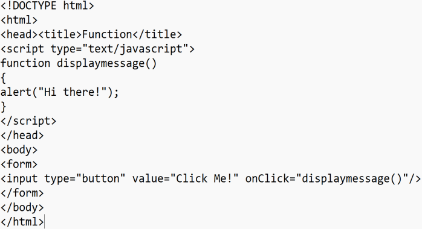
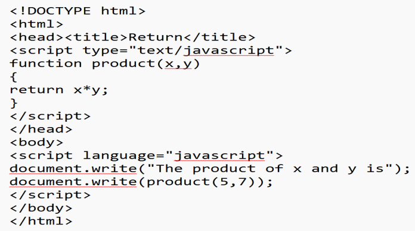

*Lesson 1*
> Events - actions that are triggered either by mouse click, function calls, keyboard strokes, loading of images, submitting an HTML form, etc.
Usually used in connection with functions.
> Functions will not work without a force that will trigger it. You can use event handlers to respond to an event on your page.


EVENTS
> Onload and onunload events are triggered when a user enters or exits a web page. Can also be used to store and retrieve cookies.
> Cookie - message given to a web browser.
> Onload - can be used to check the web browser version type and version.
~~~~~~~~~~~~~~~~~~~~~~~~~~~~~~~~~~~~~~~~~~~~~~~~~~~~~~~~~~~~~~
~ Onfocus, onblur, onchange - these attributes are often used with the validation of fields in a form.
EX: a user selects a row in a table, through JS, the whole row can be highlighted to give emphasis to the selected row.
~ Onsubmit - used to validate all fields in the form before submitting it.
> When the submit button is clicked, it will call a function checkFields(). The function will check all the fields in the form. If everything is cleared, it will return a ‘true’ so the form will be submitted; otherwise, it will return to a ‘false’ so the form will be cancelled.
~ Onmouseover and onmouseout - usually used for animation purposes.
~ Onclick - usually used to connect you to another webpage or to trigger an event call.
~~~~~~~~~~~~~~~~~~~~~~~~~~~~~~~~~~~~~~~~~~~~~~~~~~~~~~~~~~~~~~
> Popup Boxes - windows that pop-out of the screen.
JS has three kinds: alert box, user-input prompt box and confirm box.
1. Alert Box - usually used when you want to make sure that the user reads your message such as a warning or a greeting.
SYNTAX: alert(“message”);

2. User-Input Prompt Box- usually used when you want data to be prompted first before the user can enter a page.
SYNTAX: prompt(“message”, “defaultvalue”);

3. Confirm Box - usually used when you want the user to verify or accept something.
SYNTAX: confirm(“message”);

*Lesson 2*
* Conditional Statements - perform different actions for different decisions.
> If Statement - used to check or verify a condition and execute a set of statements only if the condition is true. This should be referred as a statement and not as a function.
- One of the most popular and important conditional constructs in JS and in other programming languages.
- Evaluates a condition to True or False. It then runs a specific code depending on the result of this evaluation.

> Nested If Statement - like an “if statement” with another “if statement”, just like a parent and a child.
- Used when “child” condition is only checked when the parent condition is true.
SYNTAX:
if (condition 1)
{ if (condition 2)
{ //set of statements that will be executed }}
> If-Else Statement - has also the same format as “if statement” but an Else part is added.
- If the condition satisfies the statement inside an If statement, part of the code will be executed. And Else statement inside Else part only will be executed.
- Giving an alternative instruction in case the arguments isn’t TRUE.
SYNTAX:
if (condition)
{//set of statements if condition satisfies}
else
{//set of statements if condition fails}


> If Else If Statement - multiple conditions
- statement that depends on another if statement.
- telling the browser that something is True, then do something else, if the other thing is True, then do something else, and so on.

> Switch Statement - used when a condition may have multiple results and a different set of operation is done based on each result or input.
SYNTAX
switch(condition)
{ case result1:
//operation for result 1
Case result2:
//operation for result 2
.
.
default:
//If result belongs to none of the case specified.}

*Lesson 3*
Conditions, Controls and Loops
> Function - self-contained piece of code that performs a particular “function” when it is called and it is also a set of statements or blocks of codes combined together for a particular use, also known as method.
- Usually used so that you will not have to retype your codes again.
- A function can be called anywhere within the page or even from an external JS file.
- Defined using the keyword “function” followed by its name and then open and close parentheses. This is known as an argument.
> Argument - provides additional information needed by the function to process.
SYNTAX:
function
functionname(var1, var2, var3…,varN)
{//Place your codes here}
> functionname is the name of the function.
> var1, var2, var3…,VarN are the parameters.
These are the values that are passed on to the function whenever it is triggered.
> Open and close braces are required in functions. A function without parameters should include the open and close parentheses () after the name of the function and remember the function must be in lowercase, otherwise, a JS error will be called.
EX OF FUNCTIONS: document.write(), add() and check()
document.write() - predefined function
add() and check() - user-defined functions
> Variables that are declared within a function will not last outside the function. If you want to save or reuse the value of the variable, you can use a return function. You can also put a return statement in the function so that the value stored while using the function can be returned.
EXAMPLE


Return Statement - functions that give out a value must use the return statement.

What is used to check or verify a condition and execute a set of statements only if the condition is true?
Click here to return to the Home Page!